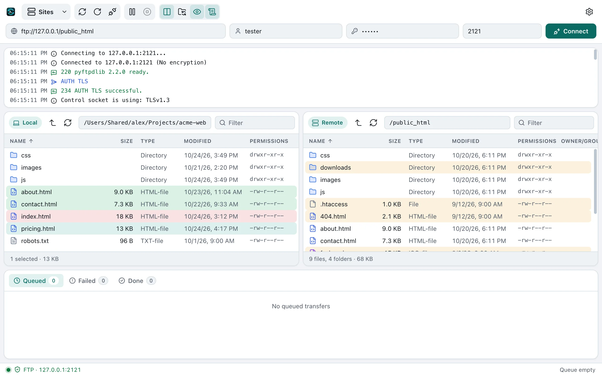
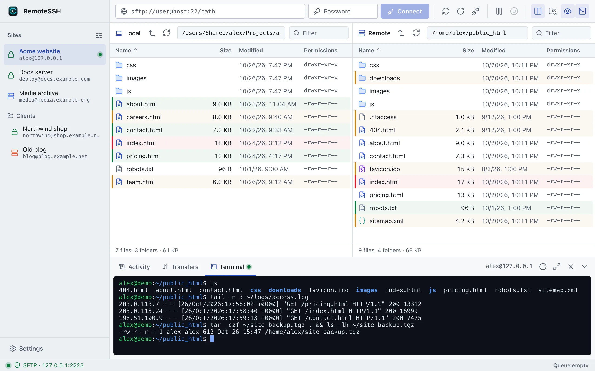
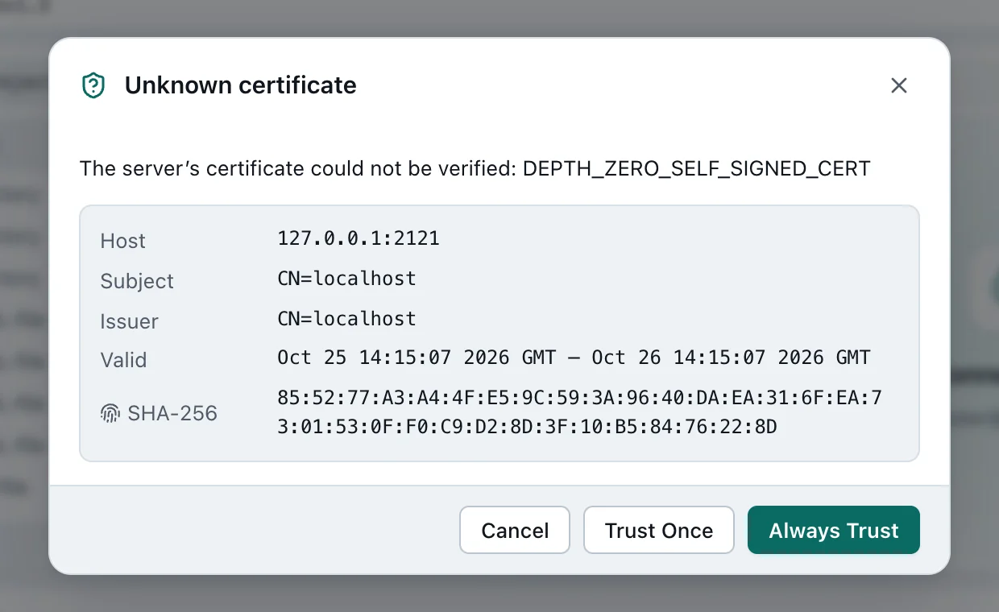

macOS Your system
macOS 15 Sequoia or later, Apple silicon
Unzip and drag RemoteSSH into Applications. Signed and notarized, so it opens without a warning.
RemoteSSH is a free, open-source file transfer client for SFTP, FTP and FTPS, with an SSH terminal when you need one. Nothing to sign up for.
For macOS 15+, Windows 10+ and Linux. MIT licensed.
Your computer
~/Projects/acme-web
Your server
sftp://deploy@example.com/var/www

Paste an address like sftp://user@host into Quickconnect, or save the server in the Site Manager with its own login, folders and settings.
| Protocol | Default port | Encryption | Sign in with |
|---|---|---|---|
| SFTP | 22 | Always (SSH) | Password, Ed25519 or RSA key, passphrase-protected keys |
| FTPS explicit | 21 | TLS after connecting | Password, anonymous |
| FTPS implicit | 990 | TLS from the start | Password, anonymous |
| FTP | 21 | None, or TLS if the server offers it | Password, anonymous |
.remotessh file. The same file opens on every platform, with passwords only if you choose.

Every release includes all platforms. Pick the file for your system.
macOS 15 Sequoia or later, Apple silicon
Unzip and drag RemoteSSH into Applications. Signed and notarized, so it opens without a warning.
Windows 10 or 11
The installer updates itself. Windows may show SmartScreen the first time: choose More info, then Run anyway.
x64 and Arm64
The AppImage and .deb update themselves. The archive shows you when a new version is out.
Release notes and older versions are on GitHub releases.
The code is on GitHub: a native SwiftUI app for the Mac and an Electron app for Windows and Linux, sharing one feature set and one site file format. Bug reports and pull requests are welcome.
# Windows and Linux (Node.js 22+)
cd electron
npm ci
npm start
# macOS (Xcode 16 or later)
cd macos
./scripts/build-app.sh